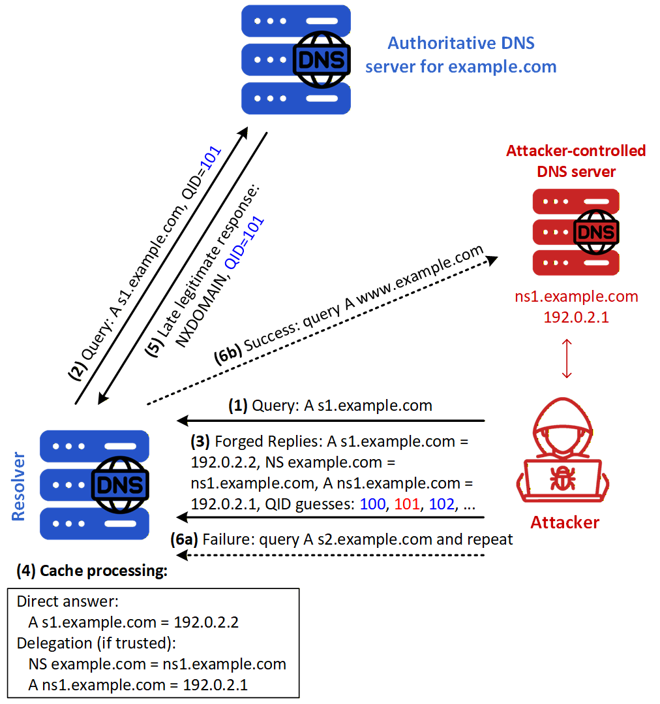
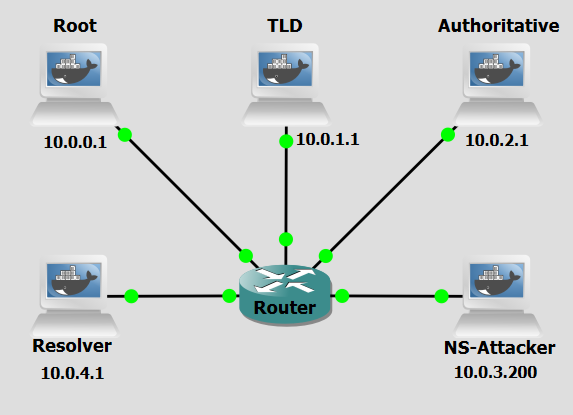

Background
The DNS Cache Poisoning attack has overlooked the cache effect. In reality, if the attacker is not fortunate enough to make a correct guess before the real response packet arrives, correct information will be cached by the DNS server for a while. This caching effect makes it impossible for the attacker to forge another response regarding the same name because the DNS server will not send out another DNS query for this name before the cache times out. To forge another response on the same name, the attacker has to wait for another DNS query on this name, which means they have to wait for the cache to time out. The waiting period can be hours or days.
Dan Kaminsky devised an elegant technique to defeat this: by always querying a different random subdomain (e.g. abc123.example.com, def456.example.com), the attacker forces the resolver to issue a fresh upstream query every time, bypassing the cache entirely. This gives the attacker a continuous stream of race windows, allowing sustained poisoning attempts without waiting.
Once successful, the resolver's cache for the domain's nameserver delegation is poisoned. All subsequent queries for the domain and its subdomains get redirected to servers under the attacker's control — until the poisoned cache entries expire.
A feature of DNS not previously explained, relevant for this attack, is the glue record. It is an A (IPv4) or AAAA (IPv6) record that is included in the DNS response when a nameserver for a domain is within the same domain. It provides the IP addresses of the authoritative nameservers for a domain, allowing DNS resolvers to query those nameservers directly, preventing a circular dependency that would occur when a nameserver is a subdomain of the domain it is serving. Without glue records, a DNS resolver would need to know the IP address of the nameserver to query it, but it would also need to query that same nameserver to find out its IP address, creating an unsolvable circular reference.

Figure 1 shows a scenario where the victim DNS server has a record of the domain (example.com) in cache. Evidently, the victim DNS server has no record of the subdomain (1238.example.com). The attacker has a pre-configured authoritative nameserver for the domain (example.com) and has a fast connection to the victim DNS server. The attack's steps are the following:
- Step 1: The attacker sends the Resolver an A-record query for a fresh randomized name, here s1.example.com.
- Step 2: Because the requested name is not cached, the Resolver sends an upstream query for s1.example.com to a legitimate authoritative DNS server for example.com, using transaction ID 101.
- Step 3: While this query remains outstanding, the attacker floods the Resolver with forged responses that reproduce the question but contain different transaction-ID guesses, illustrated by QID=100, QID=101, and QID=102. Each response pretends to originate from the queried authoritative server and contains a direct answer mapping s1.example.com to 192.0.2.2, an Authority-section NS record delegating example.com to ns1.example.com, and an Addtional-section A record mapping that nameserver to the attacker-controlled address 192.0.2.1.
- Step 4: If the forged response containing QID=101 arrives first, the Resolver associates it with the outstanding query and processes the RRsets it contains. The direct Answer-section record for s1.example.com is eligible to be cached. If the Authority and Additional-section records also satisfy the Resolver’s bailiwick, relevance, and trust requirements, the malicious delegation and corresponding nameserver address are cached as well.
- Step 5: The legitimate authoritative server returns an NXDOMAIN response for the non-existent randomized name, also using QID=101; however, this response arrives too late and is ignored because the query has already been completed. The figure then distinguishes two possible outcomes.
- Step 6a: If the attacker loses the race or the desired delegation data is not accepted, another attempt is triggered with a fresh name, such as s2.example.com.
- Step 6b: If the malicious delegation is accepted, the Resolver uses it during a later resolution and sends an A-record query for www.example.com to the attacker-controlled nameserver ns1.example.com at 192.0.2.1.
The following script was used in this lab:
Objectives
This lab demonstrates how an attacker can exploit DNS transaction ID predictability to poison a resolver's cache and redirect DNS resolution for an entire domain to a rogue nameserver. It also demonstrates the effectiveness of source port randomization as a countermeasure.
Lab Prerequisites & Network Configuration

In the GNS3 project showed in Figure 2, you will need to add in the following topology that uses five key nodes (be sure to previously check the Lab Setup Guide):
| Node Name | Role | IP Address | Subnet |
|---|---|---|---|
| Root Server | Root Zone ( .) | 10.0.0.1 | 10.0.0.0/24 |
| TLD (Top Level Domain) Server | Top-Level Domain (.com) | 10.0.1.1 | 10.0.1.0/24 |
| Authoritative Server | Authoritative nameserver for example.com | 10.0.2.1 | 10.0.2.0/24 |
| NS Attacker | Attacker controlled nameserver for example.com. Implements attack. | 10.0.3.200 | 10.0.3.0/24 |
| Resolver | Recursive DNS server (victim) | 10.0.4.1 | 10.0.4.0/24 |
We will add a delay in the connection between the router and the Authoritative Server to be able to simulate the latency observed between the resolver´s network and DNS infrastructure outside of it. Right-Click on the connection and select Packet Filters, and in Delay add 600ms of latency.
On the Resolver machine:
nano /etc/bind/named.conf.options
use-v4-udp-ports { range 53 53; };
send-cookie no;
pkill named && named -c /etc/bind/named.conf
Phase 1: Setting up the Infrastructure
The attacker machine runs a packet-sniffing script that passively monitors the LAN for outgoing DNS queries from the victim resolver and immediately races to inject a forged response.
Step 1.1: Configure the TLD Server
Make sure the TLD BIND files have the correct information on the zones:
nano /etc/bind/db.com
$TTL 86400
@ IN SOA ns.com. admin.example.com. (
2 ; Serial
7200 ; Refresh
3600 ; Retry
1209600 ; Expire
86400 ) ; Minimum TTL
IN NS ns.com.
ns.com. IN A 10.0.1.1
example.com. IN NS ns.example.com.
ns.example.com. IN A 10.0.2.1
attacker.com IN NS ns1.attacker.com
ns1.attacker.com. IN A 10.0.3.200
Step 1.2: Configure the Attacker Nameserver
On the NS Attacker machine, configure zone example.com:
nano /etc/bind/named.conf.options
answer-cookie no;
Configure the rogue zone for example.com — this is what the resolver will query once the cache is poisoned. Every subdomain returns 10.0.3.100 so it is easy to confirm which answers came from the rogue NS:
nano /etc/bind/db.fake.example
$TTL 86400
@ IN SOA ns.example.com. admin.example.com. (
2025090301
7200
3600
1209600
86400 )
IN NS ns.example.com.
ns1.example.com. IN A 10.0.3.200
ns.example.com. IN A 10.0.3.200
ns2.example.com. IN A 10.0.3.200
www.example.com. IN A 10.0.3.100
mail.example.com. IN A 10.0.3.100
*.example.com. IN A 10.0.3.100
nano /etc/bind/db.attacker
$TTL 86400
@ IN SOA ns1.attacker.com. admin.attacker.com. (
2025090301
7200
3600
1209600
86400 )
IN NS ns1.attacker.com.
ns1.attacker.com IN A 10.0.3.200
*.attacker.com. IN A 10.0.3.100
nano /etc/bind/named.conf.local
zone "example.com" {
type master;
file "/etc/bind/db.fake.example";
allow-transfer { none; };
};
zone "attacker.com" {
type master;
file "/etc/bind/db.attacker";
allow-transfer { none; };
};
Step 1.3: Prepare the Script
On the NS Attacker machine, add the script kaminsky.py:
nano /home/kaminsky.py
The kaminsky.py script builds raw IP/UDP packets entirely in Python, spoofing the source IP as the legitimate authoritative NS (10.0.2.1). Each spoofed response contains: Answer section:
Question
The script floods all 65,536 Transaction IDs for each random subdomain rather than trying to extract the correct TID from an intercepted query. Why?
Answer
The script cannot extract the TID because the resolver's query is sent directly to the authoritative NS (10.0.2.1), not to the attacker. The attacker is not on-path for that exchange and never sees the outgoing query or its TID. Instead, the script floods all 65,536 possible values — guaranteeing one will match within the resolver's timeout window..
Phase 2: Validation and Analysis
You can now execute the attack and observe the results. Do a Wireshark capture right next to the Resolver interface (as a tip, use a dns filter to better analyze the relevant DNS packets).
Step 2.1: Test DNS Resolution
On the NS Attacker machine, run:
dig @10.0.4.1 testa.example.com
dig @10.0.4.1 www.example.com
Make sure it receives a correct response, 10.0.2.100. If not, temporarly remove the delay in the Authoritative server link, and restart BIND on the Resolver machine.
See the state of the BIND Resolver's cache before the attack:
rndc dumpdb -cache
nano /var/cache/bind/named_dump.db
Step 2.2: Attack — Poisoning with an In-Bailiwick NS (ns1.example.com)
On the NS Attacker machine, run:
pkill named && named -c /etc/bind/named.conf
python3 kaminsky.py --rogue-ns ns1.example.com
Inspect the cache of the Resolver:
rndc dumpdb -cache
nano /var/cache/bind/named_dump.db
You will likely see:
; additional
ns1.example.com. 86400 A 10.0.3.200
But the NS delegation for example.com still points to ns.example.com — not ns1.example.com.
Running dig @10.0.4.1 www.example.com will return 10.0.2.100 from the legitimate server, not from the rogue NS. The glue injection worked because ns1.example.com is in-bailiwick — it falls under example.com, so BIND's bailiwick check accepts the Additional section record. However, the NS delegation itself was not poisoned because the TLD had already cached example.com NS ns.example.com as authoritative glue with a high trust ranking. BIND will not overwrite an existing high-trust cached NS delegation with one from a spoofed response.
Step 2.3: Attack — NS Delegation Poisoning with an Out-of-Bailiwick NS (ns1.attacker.com)
On the NS Attacker machine, run:
pkill named && named -c /etc/bind/named.conf
python3 kaminsky.py --rogue-ns ns1.attacker.com
Inspect the cache of the Resolver:
rndc dumpdb -cache
nano /var/cache/bind/named_dump.db
You should observe:
; authauthority
example.com. 86400 NS ns1.attacker.com. ← NS delegation poisoned
The cache result can vary between runs. In some cases the NS delegation itself gets poisoned to ns1.attacker.com; in others the delegation remains legitimate but the rogue NS still gets used. Either way, what confirms the attack worked is the presence of random subdomains returning 10.0.3.100:
; authanswer
0widiya1.example.com. 86386 A 10.0.3.100 ← served by rogue NS
That IP (10.0.3.100) can only come from the rogue NS at 10.0.3.200 — the legitimate authoritative server returns 10.0.2.100 and the flood packets inject 1.2.3.4. The resolver forwarded real subdomain queries to the rogue NS and cached its answers as authoritative.
Also notice that ns1.attacker.com does not appear as a glue A record in the cache — it was resolved separately and its IP obtained through the legitimate .com TLD. This is bailiwick checking at work: the spoofed response claims to come from the authoritative NS for example.com, so BIND only accepts Additional section records whose names fall within example.com. Since ns1.attacker.com is outside that zone, its glue is silently discarded. The resolver then had to look up ns1.attacker.com through the TLD — where it is registered — obtaining 10.0.3.200 legitimately and making the rogue NS reachable.
Run:
dig @10.0.4.1 www.example.com
The result may be inconsistent — sometimes returning 10.0.3.100 from the rogue NS, sometimes timing out. This is because the poisoning is transient: any subsequent query that traverses the .com TLD delegation chain causes the resolver to re-learn the legitimate example.com NS ns.example.com, overwriting the poisoned entry. The rogue NS gets used for a brief window before the legitimate delegation is restored.
Question
Bailiwick checking prevented the glue A record for ns1.attacker.com from being cached, yet the NS delegation to ns1.attacker.com in the Authority section is accepted in sometimes. Why does bailiwick checking apply to the Additional section but not the Authority section?
Answer
DNS has three sections in a response beyond the header: Answer, Authority, and Additional. Bailiwick checking was designed specifically to protect the Additional section — which carries supplementary glue records that the responding server volunteers without being directly asked. Without this check, any server could inject arbitrary A records for names it has no authority over simply by including them as extra data. The Authority section is treated differently because it carries NS records that are directly relevant to the query being answered. When a resolver asks about example.com and the responding server (even a spoofed one) says "the authoritative NS for example.com is ns1.attacker.com", that is a direct answer to the delegation question — not volunteered side data. BIND accepts it. This asymmetry is intentional by design: blocking Authority section NS records would break normal DNS delegation entirely.
Countermeasure
Source port randomization (RFC 5452) is the primary practical defence against the Kaminsky attack. When a resolver randomizes the UDP source port for every outgoing DNS query, an attacker must now correctly guess both the Transaction ID (16 bits) and the source port (typically ~14 bits of entropy across ~49,000 ephemeral ports) to have a forged reply accepted. This expands the search space from ~65,000 to over 3 billion combinations, making a brute-force flooding attack impractical within the time window of a single query's round-trip.
Step 1: Enable Source Port Randomization
On the Resolver machine:
nano /etc/bind/named.conf.options
use-v4-udp-ports { range 53 53; };
pkill named && named -c /etc/bind/named.conf
Step 2: Re-run the attack
Do a Wireshark capture like before, right next to the Resolver to be able to see the influence of the countermeasure.
On the Resolver, restart the BIND service (named):
pkill named && named -c /etc/bind/named.conf
On the NS Attacker machine, run:
python3 /home/kaminsky.py --rogue-ns ns1.attacker.com
Inspect the cache of the BIND Resolver to view any new cached DNS records:
rndc dumpdb -cache
nano /var/cache/bind/named_dump.db
Question
In the Wireshark capture, compare the outgoing DNS queries from the resolver with port randomization enabled versus disabled. What changes, and how does this affect the attacker's probability of success?
Answer
With port randomization disabled, all outgoing queries from the resolver use source port 53 — visible in Wireshark as a constant 53 → 53 flow. The script targets port 53, so every spoofed response has a 1-in-65,536 chance of matching the correct TID. With --batch-size 65535, the attacker sends the entire TID space in one burst and is guaranteed to hit the correct TID before the legitimate response arrives. With port randomization enabled, Wireshark shows a different random ephemeral source port on every outgoing query (e.g. 47382, 54231, 33901). The script still targets port 53, so all 65,535 spoofed responses are sent to the wrong port and are discarded by BIND before even checking the TID. The probability of a hit per sweep drops to approximately 1-in-49,152 (the size of the ephemeral port range), and the combined TID+port space of ~3 billion makes brute-force flooding infeasible within any realistic query timeout..
Question
Source port randomization significantly raises the bar against Kaminsky-style attacks. Is it a complete solution? What are its limitations, and what is the long-term cryptographic defence against DNS cache poisoning?
Answer
Source port randomization is not a complete solution. Its effectiveness depends on the randomness being truly unpredictable — which can be undermined by NAT devices that rewrite source ports to a smaller pool, firewalls that restrict outbound port ranges, or on-path adversaries who can observe the outgoing query and read the source port before the response window closes. The definitive long-term answer is DNSSEC (DNS Security Extensions). Rather than relying on transport-layer randomness, DNSSEC has zone operators cryptographically sign their DNS records with a private key. A resolver with DNSSEC validation enabled will reject any forged response — even one with a perfectly guessed TID and source port — if it cannot carry a valid signature from the zone's private key. This moves trust from probabilistic network-layer guessing to verifiable cryptography, making cache poisoning structurally impossible for signed zones regardless of how the attacker spoofs the transport layer.
Conclusion
The Kaminsky Cache Poisoning attack is a refinement of classical DNS cache poisoning. By targeting a fresh random subdomain with each attempt, the attacker sidesteps the caching defence that protects well-known hostnames — the resolver is always forced to issue a new query, providing a continuous stream of race windows. With a fixed UDP source port, the only unknown is the 16-bit Transaction ID, and flooding all 65,536 values per attempt makes success virtually guaranteed within seconds.
Several subtleties determine whether a poisoning attempt fully succeeds. Bailiwick checking governs which Additional section glue records BIND will accept — only names within the responding zone's authority are cached, so out-of-bailiwick glue (e.g. for ns1.attacker.com) is silently discarded even when the NS delegation itself is accepted. Cache trust ranking means that a high-trust NS delegation already cached from the TLD cannot be overwritten by a spoofed response, which is why in-bailiwick NS names that are not the current primary NS are the most reliable poisoning targets. And the 600ms artificial delay is essential — without it, the legitimate authoritative server answers before the flood can land.
Source port randomization dramatically increases attack difficulty by adding a second independent random field, expanding the search space by roughly four orders of magnitude. The Wireshark captures make this concrete: with a fixed port every spoofed response has a chance of landing; with a randomized port virtually none do. Nevertheless, DNSSEC remains the only cryptographically sound long-term defence, ensuring forged replies are rejected regardless of how accurately an attacker guesses the transport-layer parameters.